공모전
각종 공모전에 참여하며 실무 아이디어를 발전시키고 성과를 공유합니다.
세종대학교 관광대학원전시컨벤션산업전공
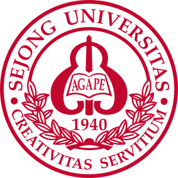
전시·컨벤션 기획과 디지털 기술을 연결하는 배움
전시컨벤션 산업의 비즈니스 과제를 해결할 융합 인재를 양성합니다. 신서비스 기획, 무역전시 디지털 테크놀로지, 데이터 매니지먼트, 알고리즘 기반 의사결정 역량을 함께 기릅니다.
각종 공모전에 참여하며 실무 아이디어를 발전시키고 성과를 공유합니다.
우수 참여자의 해외 컨퍼런스 참가 시 호텔·항공·등록비를 지원합니다.
전시컨벤션 산업의 직무와 진로를 탐색하는 취업 프로그램에 참여합니다.
학기 중 인턴 및 현장실습을 통해 현장 경험을 쌓습니다.
전시컨벤션 산업 현장과 연결된 실무 수업을 진행합니다.
전시컨벤션 기업과 연계한 프로그램 및 산학 프로젝트에 참여합니다.
참여 자격과 지원 범위는 사업 운영 기준에 따라 적용됩니다. 자세한 내용은 전시컨벤션산업연구소로 문의해 주세요.
졸업 후에는 코엑스, 킨텍스, 메쎄이상, 유니온 등 전시컨벤션 관련 기업으로 진로를 넓혀갈 수 있습니다.
전시컨벤션 산업 관련 기업과 협력 프로젝트를 진행합니다.
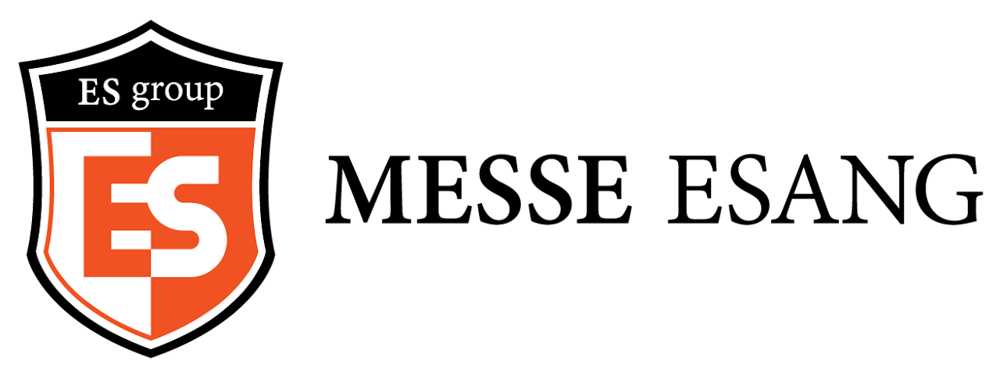
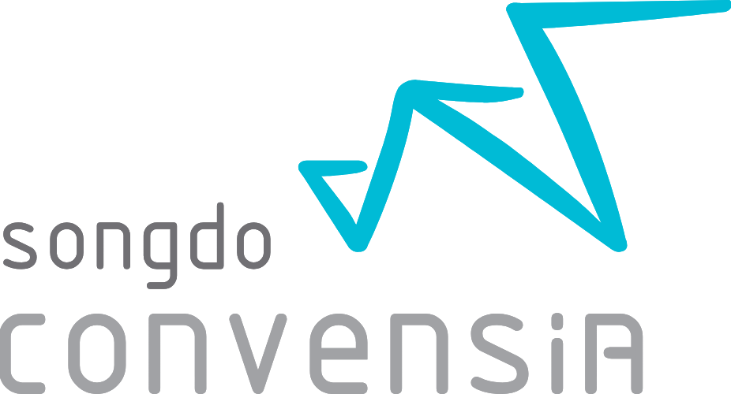
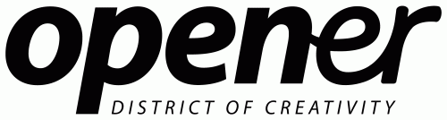
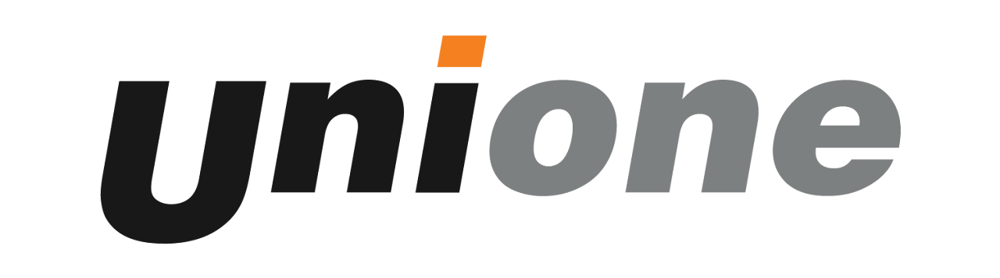
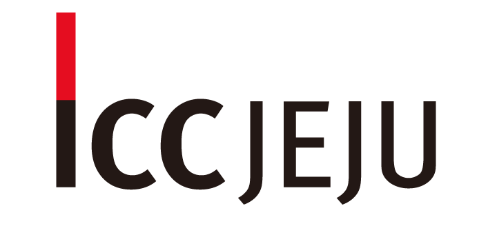
교육목표와 교과목, 전공 운영체계를 살펴보세요. 제목을 선택하거나 좌우로 넘길 수 있습니다.
전공 교육의 방향과 주요 역량
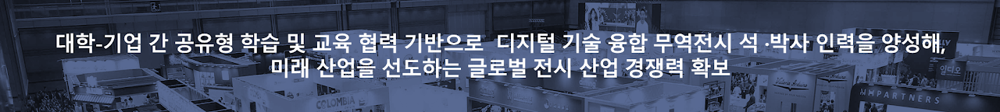
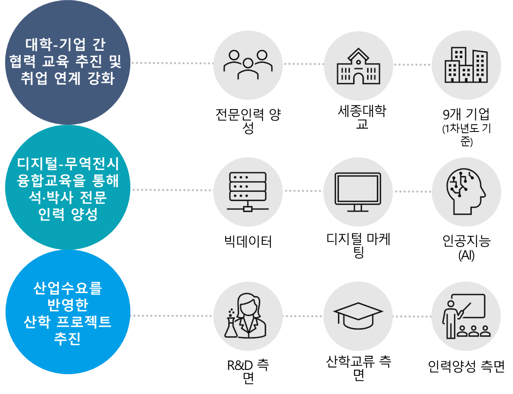
기초공통·디지털테크·융합형 과정
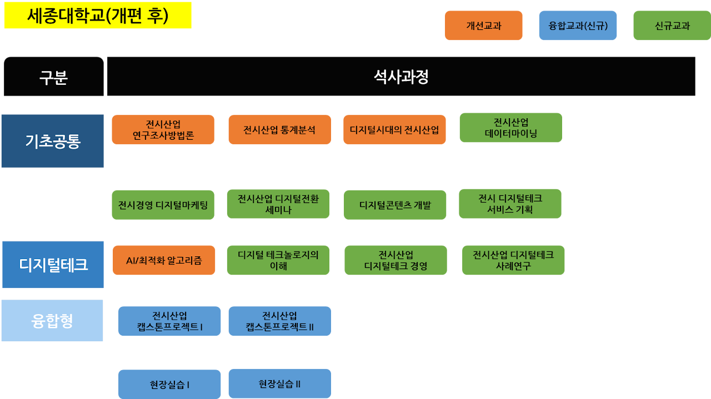
교과목 간 연계 구성
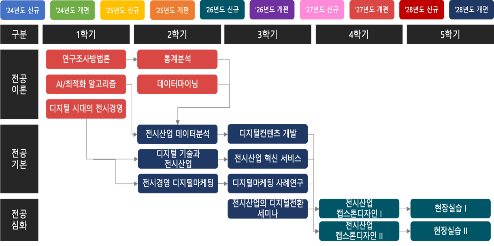
운영위원회 구성과 역할
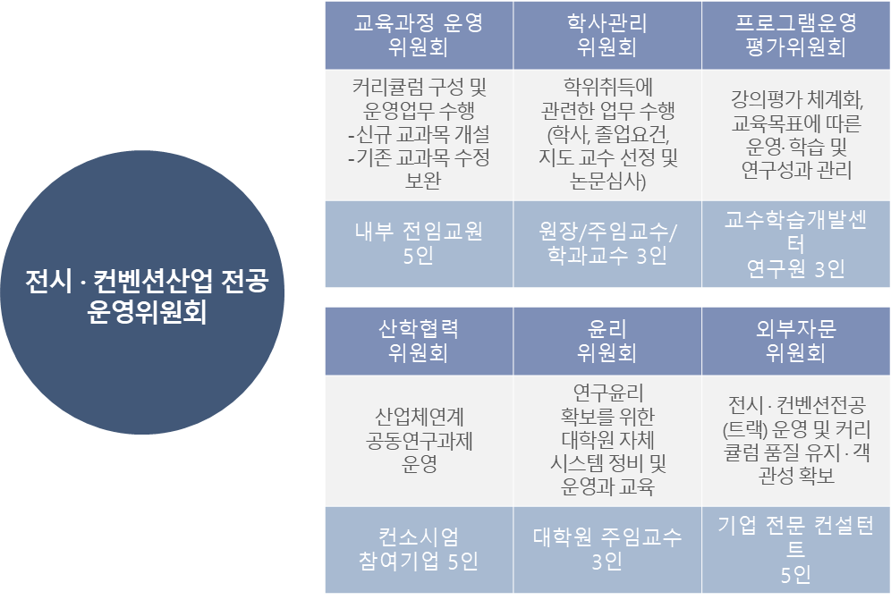
전문인력양성사업 안내
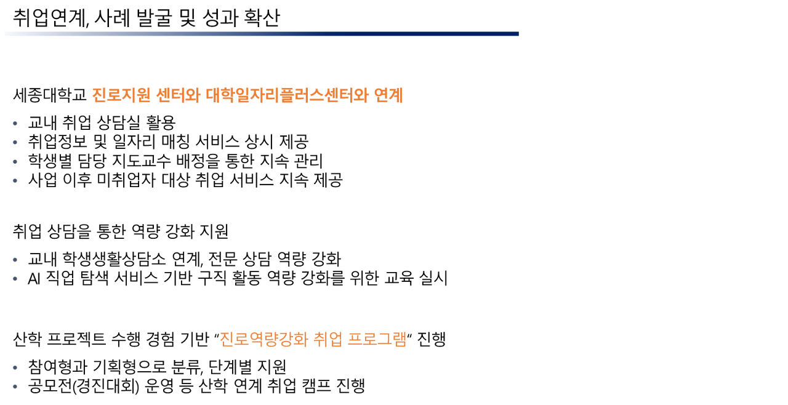
전공 세미나 안내
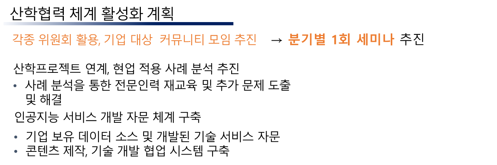